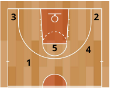
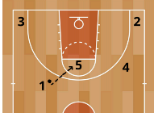
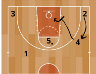
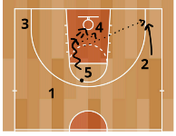
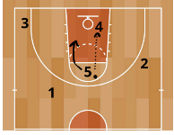
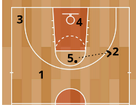
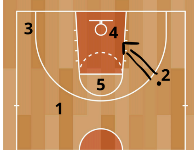
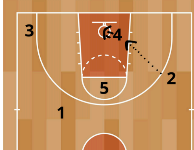
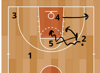

Jugada Favorita
4 Alto
JUGADOR 1
: El base, tiene que hacer buenos pases y botar bien.
JUGADOR 2
: El escolta, tiene que saber tirar en movimiento y hacer buenos tiros.
JUGADOR 3
: El ala-pivot, buscar cortes y atacar el rebote.
JUGADOR 4
: El alero, saber hacer un buen bloqueo y saber tirar, además de ver oportunidades.
JUGADOR 5
: El pivot/poste, tiene que saber chocar y tener buena visión de juego, además de dar buenos pases.
1.Colocación inicial de los jugadores

2 El 1 tiene que ser capaz de darle siempre el balón al 5 de la mejor manera posible para que
este no reciba estando desequilibrado. No se necesitan florituras, solo que el balón llegue a su
destino.

3 Cuando el 5 esté a punto de recibir el 4 irá a poner un bloqueo indirecto al defensor del
número 2, siempre contactando por muy hundido que esté y tratará de girarse hacia la canasta.
El 2 una vez el 4 haya colocado el bloqueo subirá a la posición de este

4.1 El 5 lo primero que mirará cuando reciba es si tiene alguna ventaja para jugar el 1c1. Si lo
juega el 4 mantendrá su posición y el 2 se moverá hacia donde más le convenga para recibir

4.2 Si el 4 ha sacado ventaja de su bloqueo o tiene ventaja en el emparejamiento el poste debe
tratar de dársela y cortar al aro por si puede recibir o para atacar el rebote.

4.3 El 5 busca el pase de inversión al que sube del bloqueo indirecto

4.3.1 El 2 tira si el defensor le deja espacio

4.3.2 Si el 4 puede sacar ventaja en el poste bajo le damos el balón y él lo leerá según el 1.4

4.3.3 El dos aguanta con balón hasta que el 5 coloque el bloqueo directo hacia el centro y el 4
se abre a esquina
